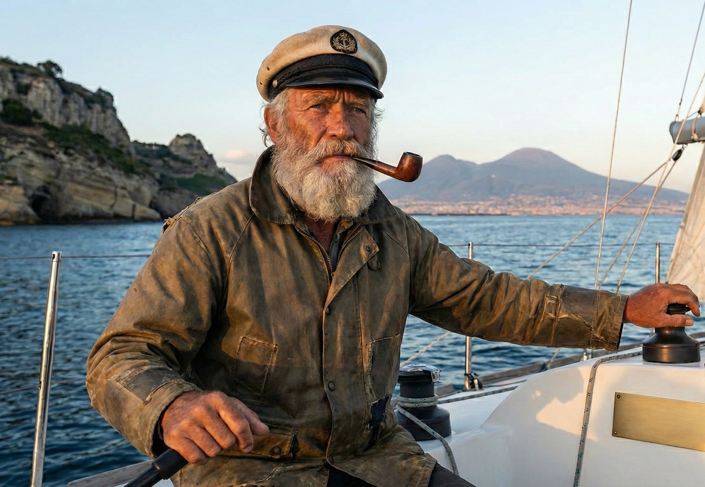

Le 5 baie segrete di Procida
• Lettura 2 min

L'Autore

Marco il Marinaio
Skipper Esperto SailUP
Skipper con vent'anni di esperienza nel Golfo di Napoli. Condivide le sue rotte segrete per una navigazione sicura.
Introduzione
Procida, Capitale Italiana della Cultura 2022, è un gioiello del Golfo di Napoli. Ma oltre ai suoi celebri borghi colorati come la Corricella, l'isola nasconde tesori accessibili solo a chi ha la fortuna di esplorarla via mare.
Le Spiagge Segrete
1. La Spiaggia del Pozzo Vecchio
Nota anche come la "Spiaggia del Postino" per essere stata il set del celebre film con Massimo Troisi, questa baia a forma di mezzaluna è caratterizzata da sabbia scura di origine vulcanica e un'atmosfera sospesa nel tempo.
2. La Baia della Chiaiolella
Sebbene la Chiaiolella sia un porto turistico conosciuto, la sua baia nasconde calette più piccole e appartate verso l'isolotto di Vivara, ideali per gettare l'ancora e godersi un pranzo al riparo dai venti.
3. La Spiaggia della Lingua
Situata sul versante opposto al porto principale, è una piccola lingua di sabbia e ciottoli. È meno frequentata dai turisti via terra a causa della ripida scalinata, ma via mare offre un'acqua cristallina e una vista impareggiabile sul canale di Procida.
4. Spiaggia di Ciraccio
È la spiaggia più lunga dell'isola, spesso battuta dal sole tutto il giorno. La parte più a ovest, separata dai Faraglioni di Procida, offre piscine naturali tra gli scogli dove è possibile fare snorkeling in totale tranquillità.
5. Punta dei Monaci
Un luogo selvaggio e roccioso, accessibile quasi esclusivamente via mare. Qui la natura regna sovrana e i fondali sono profondi e ricchi di vita, perfetti per chi ama le immersioni o semplicemente nuotare nel blu profondo lontano dalla folla.